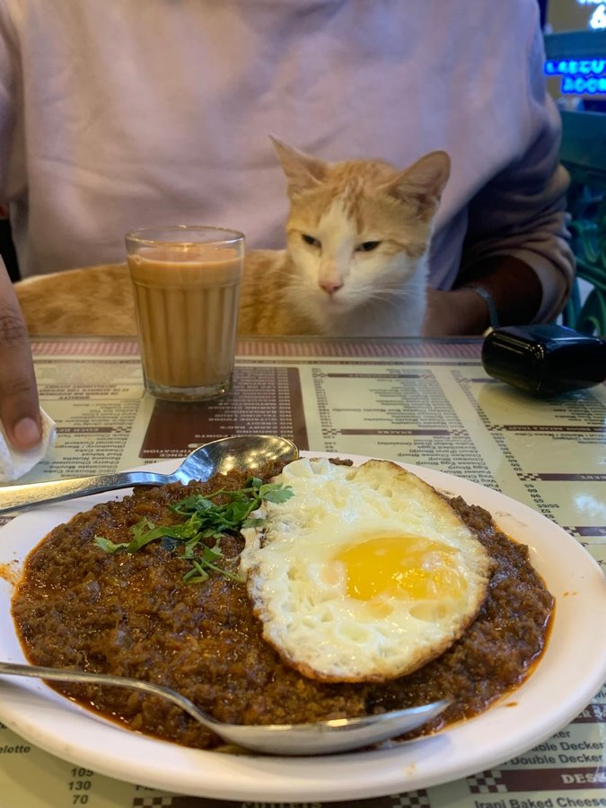

I'm Aakash. I work on AI systems, and audit tools. Most of what I build comes back to one question:
is this system doing what we think it's doing?
That has meant an auditor that detects objective drift in an agent,
a separate fairness audit of who gets credit in India, and
the inference pipeline on an offline AI device the Government of India now ships.
Day to day I'm an AI consultant at Kalpa Impact in Mumbai, working with UNDP, the Gates Foundation,
and India's Principal Scientific Adviser's office. Before this I spent two and a half years at ZS Associates optimising business rule-based algos for Fortune 100 pharma,
and started out as a product analyst at a fintech.
Away from the screen: Mumbai's street cats distract me constantly, the one below spent
an entire lunch negotiating for my keema, and I care more than is reasonable about this
city's transport network. I'd like Mumbai to be walkable in my lifetime. (fingers crossed)
UNDP · DPGA · Gates Foundation · Co-Develop · Government of India (Bhashini, and the Principal Scientific Adviser's Office) · a Fortune 100 pharma company
Published
A book chapter with CRC Press · a paper draft, not yet on arXiv, sole author
Released
A compliance auditor on PyPI · an open 8-agent AI-safety benchmark · an agentic analytics product
Client work through Kalpa Impact and ZS Associates.
Governance of deployed agents rests almost entirely on declared purpose: a system card, an intended-use statement, a policy document. None of these constrain what an agent optimises for once it holds tools. The Inverse-Objective Regulator treats that question empirically. Bayesian inverse reinforcement learning recovers a revealed objective from tool-call traces alone, scores its divergence from the declared purpose, and emits the result as evidence mapped to the EU AI Act, OWASP, MITRE ATLAS and NIST AI RMF, in JSON and SARIF, formats existing assurance pipelines already consume.
The accompanying benchmark releases eight agents with planted failure modes — reward hacking, power-seeking, sycophancy, privacy leakage, safety-skipping — so that competing auditors can be assessed against a known ground truth rather than against one another's claims.
Frontier LLM-as-judge, per agent0.08–0.43
Open critic, mean0.55
mean r0.25.50.751
Correlation with planted objective divergence. The LLM-as-judge spans 0.08 to 0.43 depending on which agent it scores; the open critic averages 0.55 and ranked the planted objective top-2 on every seed for 6 of 8 agents, deterministically and with no API cost.
2.2
Suno Sutra
Digital India Bhashini (MeitY) × Current AI · Edge device · Hardware ↗
Suno Sutra is an open-source handheld device built by Digital India Bhashini (MeitY) and Current AI. It runs a vision model, Bhashini's speech recognition and translation, and text-to-speech entirely on-device across India's 22 official languages, in settings where connectivity cannot be assumed. Three models share one small board, and memory rather than compute is the binding constraint.
I designed the inference pipeline and owned the benchmarking that governed its tradeoffs. Stages overlap rather than execute in sequence; batching is applied only where it does not delay the first output chunk; model residency is scheduled against peak rather than average memory. Alongside the team's INT8 conversion through ONNX, latency to first audio fell from approximately eight seconds to two or three, and peak memory by 40 per cent.
Before~8s
After pipeline redesign2–3s
latency to first audio02.5s5s7.5s10s
Latency to first audio on-device, before and after. Peak memory down 40% over the same change.
The Specialist, built on that platform, answers a teacher's question by voice or camera from approved DIKSHA curriculum content, aloud, in the local language (Source ↗). A system that cannot be supervised in the classroom has to decline rather than improvise, so refusal is enforced at two points: retrieval declines below a similarity threshold before an inference call is spent, and the grounded prompt requires a no-answer signal that the pipeline converts into an explicit refusal. Every answer returned carries a citation to chapter, section and page.
The embedder is multilingual-e5-small with a deterministic TF-IDF fallback fitted at build time, so the loop remains reproducible where the neural model is absent and the refusal threshold stays backend-aware. Deployment is an additive overlay installed by an Ansible role: no base file is modified, and content sits outside the code tree so the syllabus refreshes during the device's connectivity window, independently of the software. Harvesting of DIKSHA assets remains gated pending bulk-download and redistribution licensing.
I also designed the evaluation framework for the VYOMA Innovation Challenge (₹80 lakh, run by Bhashini, Current AI and Kalpa Impact): the jury rubric, the use-case judging matrix, and the scoring thresholds, through to the finale at IIIT-Delhi.
2.3
rag-compliance-auditor
Open-source package on PyPI · Built solo · Source ↗ · PyPI ↗
Compliance for retrieval systems is ordinarily assessed after deployment, at the level of documents, by reviewers who cannot inspect the pipeline. The timing is the problem: by the point of assessment the architecture is fixed and remediation is expensive. This MCP server moves the assessment into the development loop. It audits RAG and AI pipelines across seven dimensions against the EU AI Act, GDPR/DPDP, HIPAA, SEBI/RBI and NIST AI RMF, issues signed reports, and reports through SARIF so a failed check fails a build.
Fairness audits of credit markets conventionally examine the terms offered to approved applicants. That framing conditions on selection. Households that never enter the market are absent from the sample, and a market which excludes them can be shown to treat its participants equitably. This audit separates the two questions: a two-stage, Heckman-style model estimates entry into the credit market, then the allocation of formal against informal credit among those already inside it.
On NSSO 77th Round data, female-headed households entered at approximately 59 per cent of the rate of male-headed households, a disparate impact of 0.59 against the conventional threshold of 0.8. IBM AIF360 adversarial debiasing and SHAP were then applied to test for proxy discrimination; disparate impact rose to 0.94 at approximately 73.2 per cent accuracy.
four-fifths rule
Male-headed households1.00
Female-headed, before debiasing0.59
relative P(entry)0.25.50.751
Measured baseline: probability of entering the credit market relative to male-headed households. A disparate impact of 0.59, well below the conventional 0.8 threshold. Adversarial debiasing lifts it to 0.94, at ~73.2% accuracy.
The design’s limits are stated with the result: self-reported survey data, the risk of collider bias, and SHAP as a diagnostic of the model rather than causal evidence.
2.5
Earlier work
University projects · 2022–23
Baby Cry Reason Detection. Why an infant is crying, from audio alone: MFCC, spectral contrast, and prosodic features over 457 samples, SMOTETomek for class imbalance, and a soft-voting SVM + KNN ensemble, shipped in a Flutter app with a feedback loop for retraining. Team of 3.
3
Experience
3.1Feb 2026 – present
AI Consultant
Kalpa Impact · Mumbai
Digital public infrastructure and AI governance consulting for UNDP, DPGA, the Gates Foundation, and Co-Develop.
With the Principal Scientific Adviser's Office, wrote a section of AGI Governance on AI incident-reporting mechanisms India can adopt, drawing on the EU AI Act and California's SB-53.
Designed the inference pipeline and benchmarking for Suno Sutra, the offline AI device built by Bhashini and Current AI (2.2): batching under a hard RAM ceiling cut latency to first audio from ~8s to 2–3s and peak memory by 40%.
Built and packaged a grounded retrieval module for the device, and designed the evaluation framework for the VYOMA Innovation Challenge: jury rubric, judging matrix and scoring thresholds.
Verified edge-AI performance claims submitted to the Gates Foundation, and wrote the reference architecture for AI-enabled coordinated care over ABDM-connected health systems.
Built an internal RFP crawler with a scoring model that ranks incoming opportunities, rebuilt on free sources to run at near-zero cost.
3.2Sep 2023 – Jan 20262 yr 5 mo
Senior Associate, Business Technology Solutions
ZS Associates · Pune · joined as Associate, promoted within 8–10 months
Launched an agentic AI analytics product for natural-language querying of sales-performance metrics.
Owned incentive-compensation product logic for a Fortune 100 pharma client, delivered at 100% accuracy.
Led a team of 4. Recognised as a top 1% performer firm-wide.
3.3Jul 2022 – Feb 20238 mo
Product Analyst, intern
Bright Money · Bangalore
Launched a referral programme that saved $120K in customer-acquisition cost over 5 months.
Built A/B testing infrastructure and SQL dashboards.
4
Publications
4.1
Section on AI incident-reporting mechanisms for India. In AGI Governance, with the Office of the Principal Scientific Adviser to the Government of India.
Mechanisms India could adopt, drawing on the EU AI Act and California's SB-53.
4.2
Sangani, A. Inverse-Objective Regulator. Paper draft, sole author, not yet on arXiv.
Sangani, A., Doshi, P., & Sawant, V. Unusual social media behavior detection using distributed data stream mining. In Practical Data Mining Techniques and Applications. Auerbach Publications (CRC Press), 2022–23.
Spots hacked or bot-run accounts from clickstreams. Users are clustered by behaviour, with a Very Fast Decision Tree per cluster, parallelised on Apache Spark. Concept-drift handling means a genuine change in someone's behaviour retrains the model instead of raising a false alarm.
5
Education
5.1
D. J. Sanghvi College of Engineering
University of Mumbai · B.Tech, Information Technology · 2019 – 2023
CGPA 8.90 / 10, credit-weighted across eight semesters, on a merit scholarship covering 100% of tuition.
Selected coursework
Advanced Data Structures
O
95
Probability & Statistics
O
93
Artificial Intelligence
A+
84
Discrete Structures
A+
84
Design & Analysis of Algorithms
A+
83
Statistical Analysis
A+
81
6
Correspondence

Negotiations, Mumbai.
Reach out if:
you're building evaluation or assurance tooling
you work on on-device or multilingual AI for places with bad connectivity
you're writing about incident reporting or conformity assessment and want a second reader
you're hiring for applied AI or forward-deployed work, and can sponsor from India
you'd like to argue about whether an LLM can be trusted to judge another LLM. I think the answer is mostly no, and I have the numbers.
you'd like to discuss anything city design, cats, or short poems!